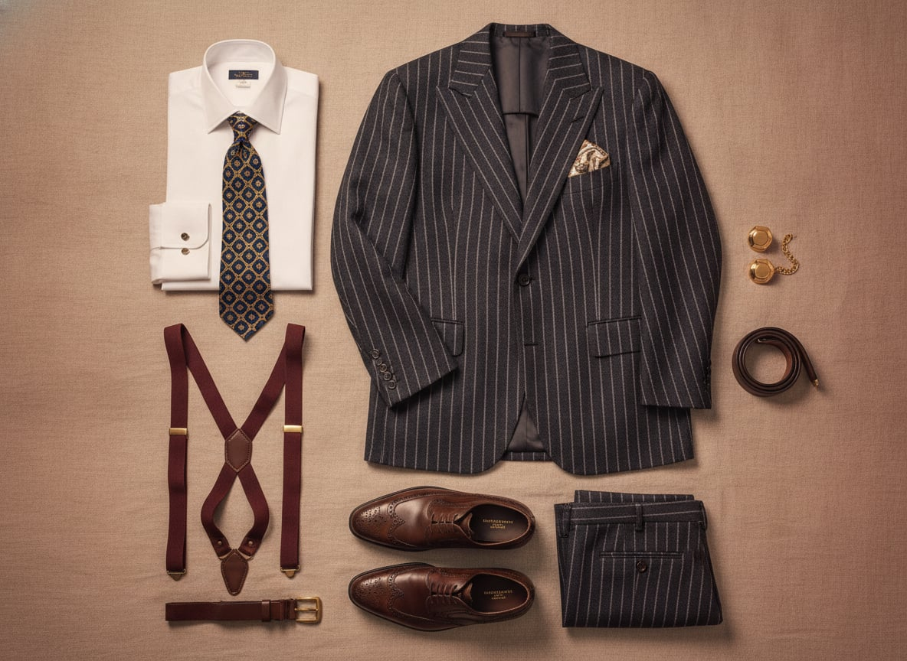
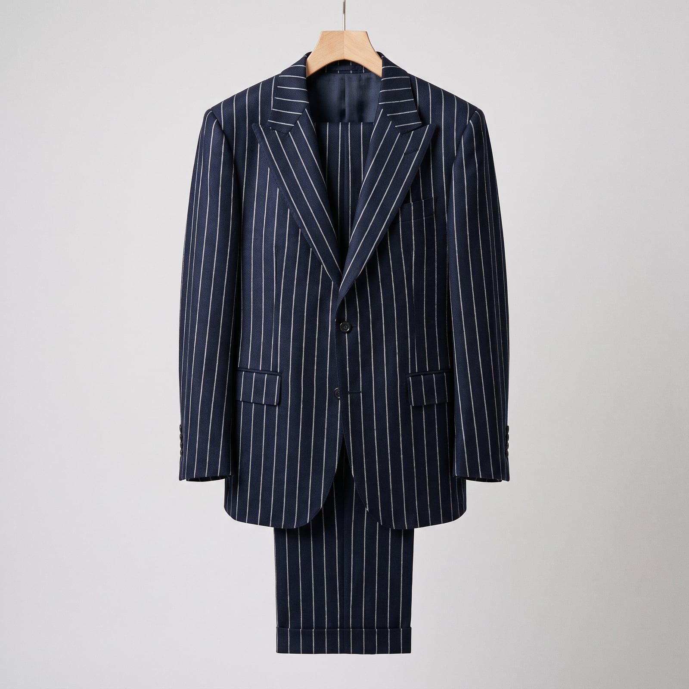
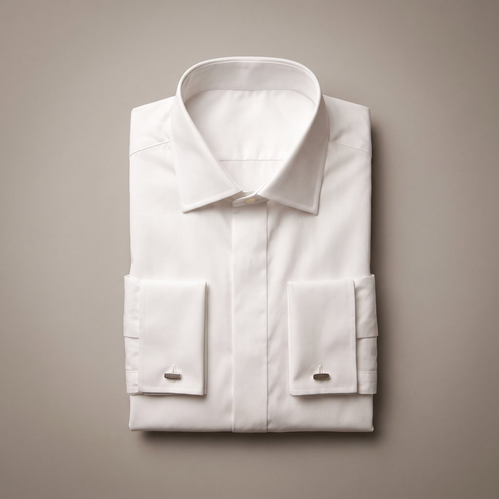
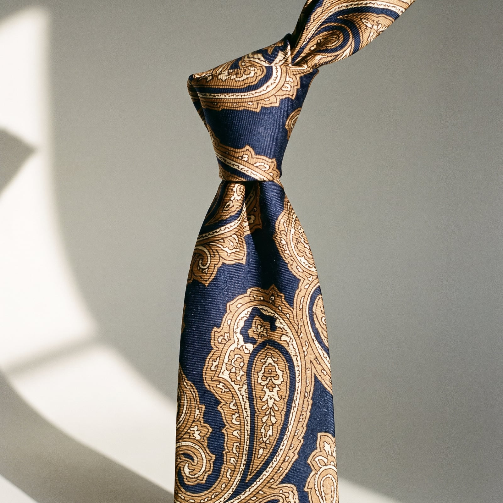
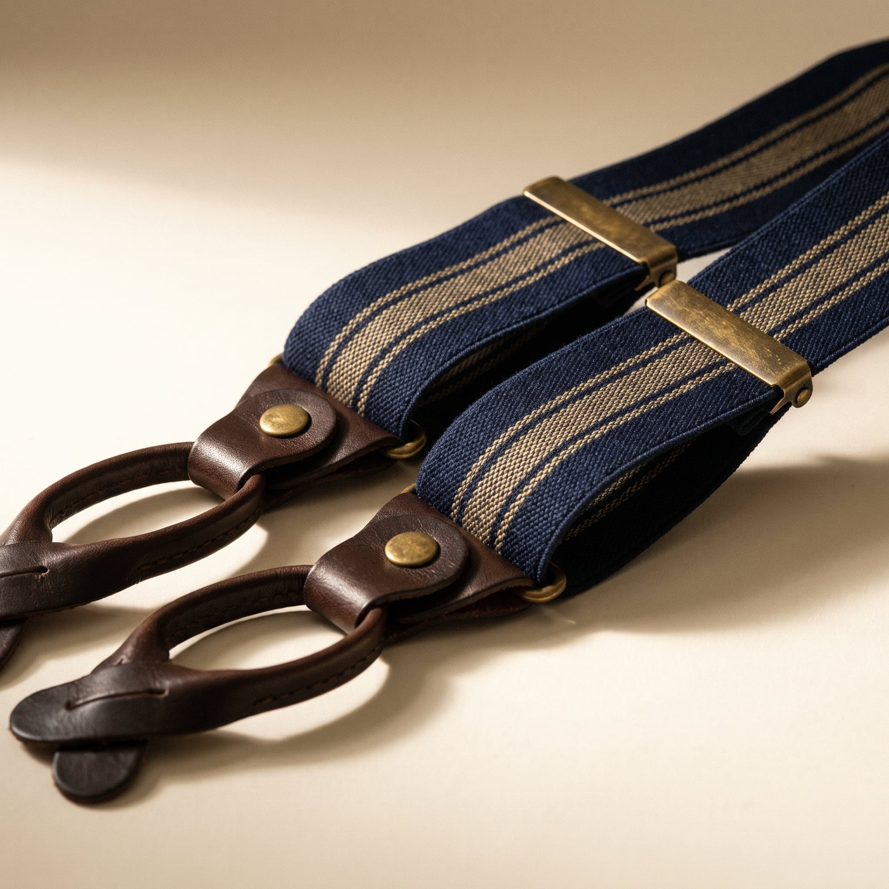
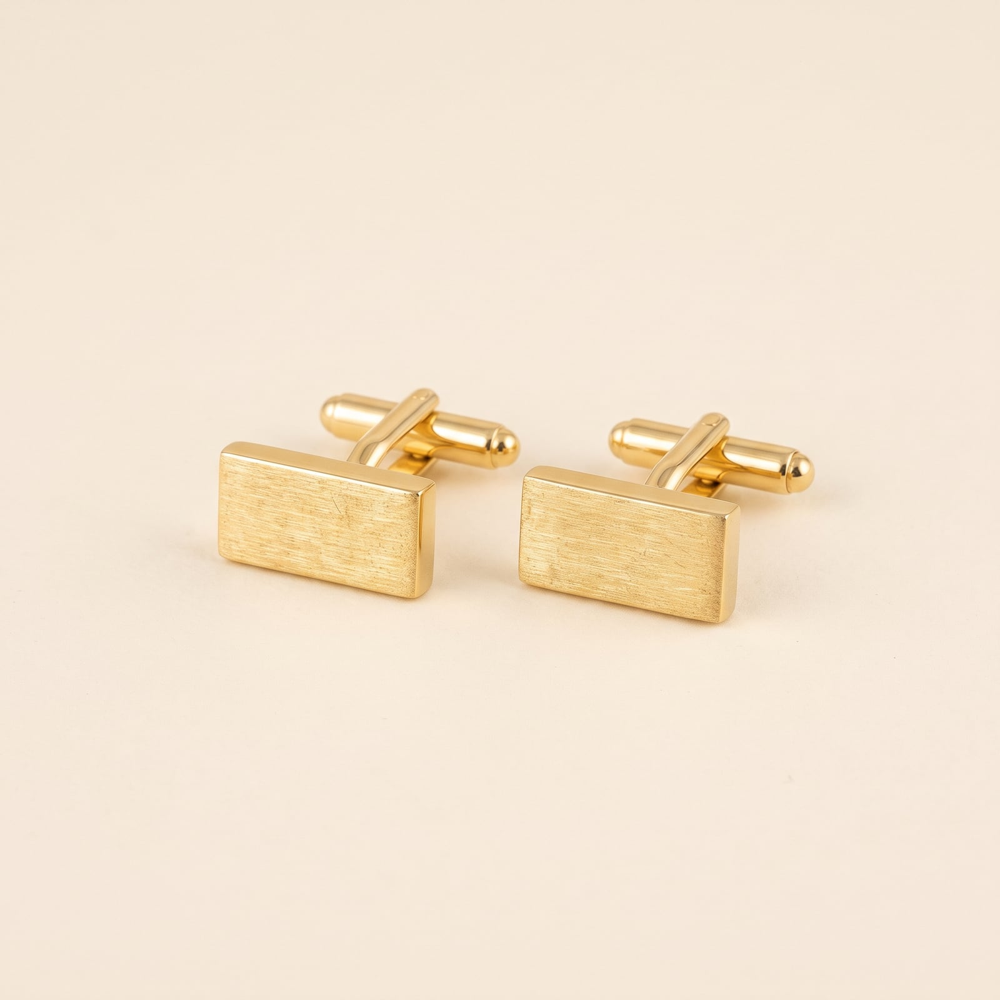

The Financier
American power dressing has a fairly precise birthdate: the deregulated, hyper-competitive Wall Street of the 1980s, when a generation of bankers and brokers borrowed the vocabulary of English tailoring and turned the volume up considerably. Where Savile Row whispered, the Financier's suit was built to be heard across a trading floor — bolder pinstripes, wider shoulders, a shirt collar and tie loud enough to read as a challenge rather than an accessory. Gordon Gekko's “Wall Street” wardrobe in 1987 didn't invent the look so much as photograph it accurately.
The trademarks are formality turned into a weapon: a structured shoulder built for a boardroom, French cuffs and cufflinks that cost more than they needed to, a tie chosen to be noticed from across the room. Nothing about it is quiet, because quiet doesn't close deals.
It suits people who see getting dressed as a competitive act — who understand that the first ninety seconds of any negotiation happen before anyone speaks, and want those ninety seconds working in their favor. There's real confidence in it, even bravado, and a genuine belief that looking successful is most of the way to being it.
- A structured, wide-shouldered suit built to command a room
- Bold pinstripes and high-contrast shirt-and-tie combinations
- French cuffs and cufflinks, worn as a small display of means
- A tie knotted large and chosen to be seen at a distance
- Braces (suspenders) as both function and flex


The Power Suit
The 1980s Wall Street uniform borrowed English tailoring's vocabulary and turned the volume up — wider shoulders, bolder stripes — because a trading floor rewarded being noticed across the room in a way a quiet English study never had to.
A genuine structured shoulder and full canvas at a real discount from Savile Row prices.
Shop this →Italian mill cloth and a more considered, luxury finish.
Shop this →Hand-tailored construction from the houses most associated with executive power dressing.
Shop this →
The French Cuff Shirt
The double, folded-back cuff fastened with a link rather than a button has no real function beyond signaling that its wearer doesn't do work that would catch on a cufflink — a small, deliberate display of a desk job, not a factory one.
A genuine French cuff at an accessible price.
Shop this →Heavier poplin and a more precisely cut collar.
Shop this →The Place Vendôme shirtmaker most associated with this exact wardrobe.
Shop this →
The Bold Silk Tie
A wide, boldly patterned tie chosen to be seen from across a trading floor or boardroom table functions here as a competitive signal — subtlety was never the goal.
The house most associated with this era's power-tie aesthetic.
Shop this →Custom or discontinued patterns sourced through specialist dealers.
Shop this →
The Braces (Suspenders)
Braces worn visibly, rather than hidden under a waistcoat as tradition once dictated, became a specific 1980s Wall Street flourish — Gordon Gekko's red braces in 'Wall Street' turned a practical trouser-support into a genuine status symbol.
Genuine button-end construction at an accessible price.
Shop this →The English maker most associated with high-end braces since the 19th century.
Shop this →Custom colors and hardware to match a specific wardrobe.
Shop this →
The Cufflinks
Cufflinks moved from purely functional fasteners to a small, coded display of taste and means sometime in the 19th century, and the financier's wardrobe has leaned on that coding ever since — a cufflink says more about its owner than almost any other accessory this small.
Solid silver at an accessible price.
Shop this →Better materials and more distinctive design work.
Shop this →Solid gold, sometimes with a personal monogram or family crest engraved.
Shop this →Have the suit properly structured through the shoulder — this silhouette is meant to fill a room, and a soft, unpadded shoulder undercuts the entire effect the cut is going for. Buy the boldest pinstripe you can commit to, and let the shirt-and-tie contrast be genuinely high; subtlety isn't the goal here, presence is.
Spend real money on cufflinks and the watch — in a wardrobe built around small, deliberate displays of means, these details get noticed far more than the suit's cut ever will up close, across a table.
Don't soften this into a normal business suit — the wide shoulder, the bold stripe, the large tie knot are all doing a specific job, projecting authority before a word is spoken, and trimming any of them down for modesty just produces an ordinary suit that's slightly too big. This wardrobe either commits to the statement or it doesn't work at all.
This is a boardroom-and-restaurant wardrobe, and it overwhelms almost any casual context — the same suit that commands a negotiating table reads as absurd at a weekend barbecue. Know when the room actually calls for it.
Tropical wool or fresco instead of worsted, still fully structured, still a real suit -- this wardrobe does not do business casual, regardless of the forecast.
A heavier flannel suit under a cashmere overcoat, real leather gloves, and a scarf that costs more than most people's coats.
A fitted trench or a covert coat over the suit, a large golf umbrella carried like a prop, and shoes that get immediately re-shined afterward.
The overcoat gets heavier, the town car gets called more often, and the boots (a rare concession) get swapped back for real shoes the moment he's indoors.
Black tie for the annual dinner: a proper dinner suit, the same competitive attention to detail applied to a cummerbund as to a term sheet.

The Hamptons in summer, Aspen in winter, and a business trip to London extended by exactly one extra day for personal reasons that never quite make it onto the expense report.
A hotel is judged primarily by its concierge's ability to get a reservation somewhere fully booked, and that judgment gets discussed at length afterward.
The Wall Street Journal cover to cover, every morning, in an order that never changes, plus biographies of takeover artists read partly as instruction manuals.
Liar's Poker gets reread every few years like a class reunion — less for new insight than for the comfort of a world that still, somehow, checks out.
Find it on Amazon →Classic rock played loud in a car that costs more than most people's first home, chosen for volume and nostalgia over anything more current.
A season subscription to whatever's considered the serious orchestra in town, attended as much for who else is there as for the program.
Listen on YouTube →A corner office's worth of ambition applied to a living room — a real wet bar, stocked and used, and art bought partly as investment, partly as conversation piece.
A view treated as a line item worth paying for specifically, discussed with the same seriousness as any other asset on the balance sheet.
See more on Pinterest →Golf as a genuine second job — deals get discussed on the back nine as often as in an office — and squash before the market opens, timed precisely around it.
A fantasy football league taken with real competitive intensity, run with the same rigor as an actual portfolio.